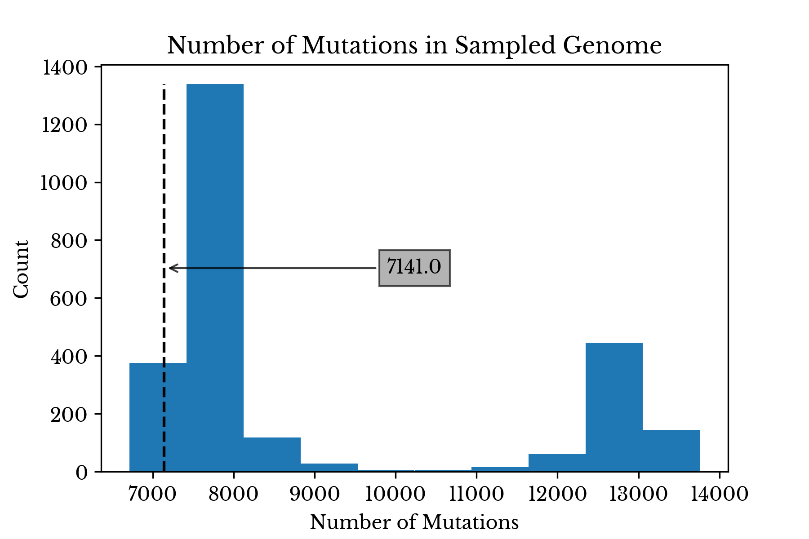
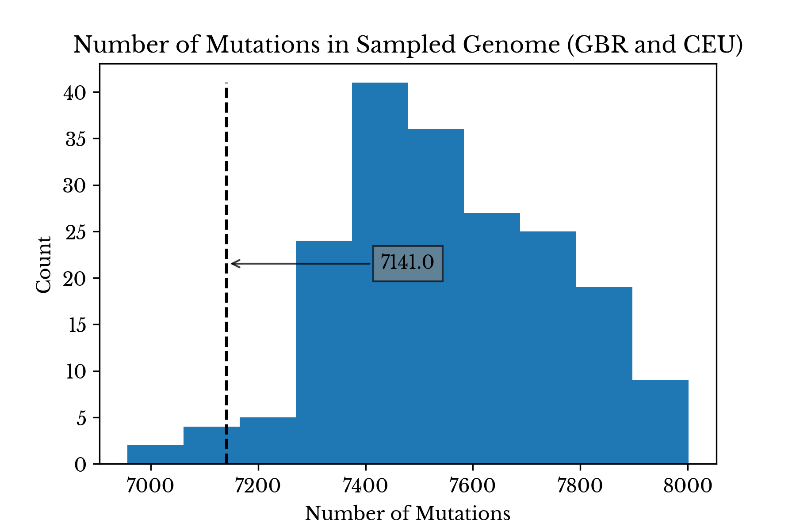
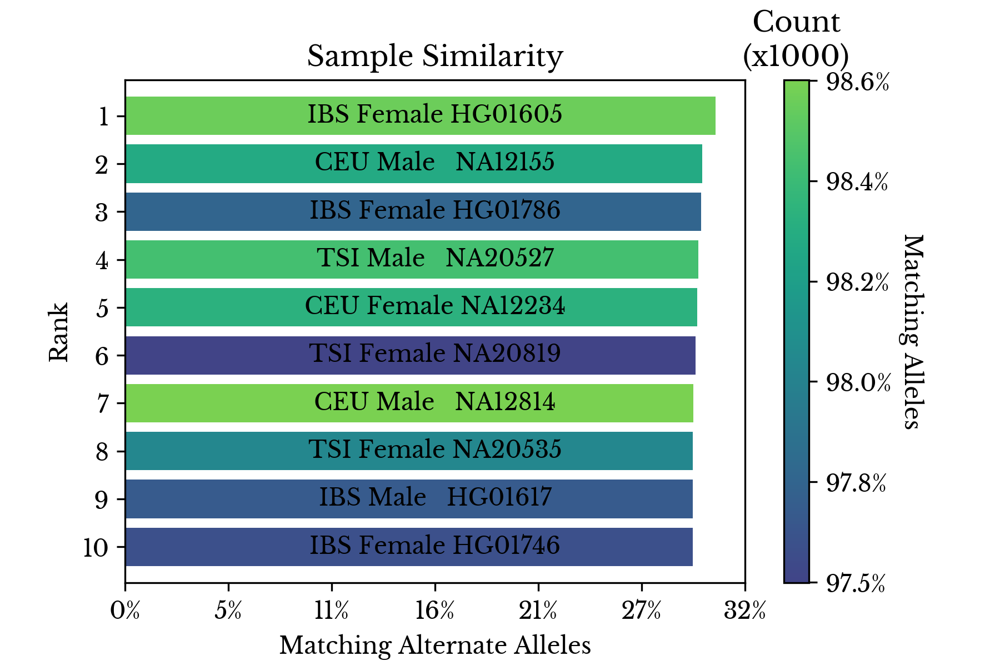
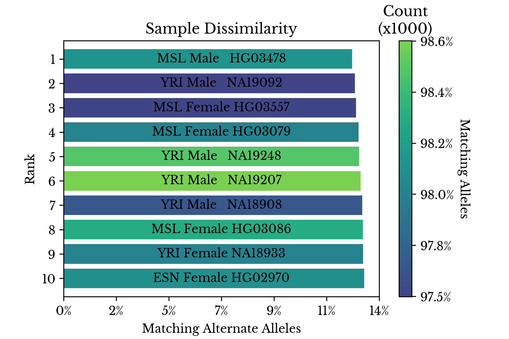
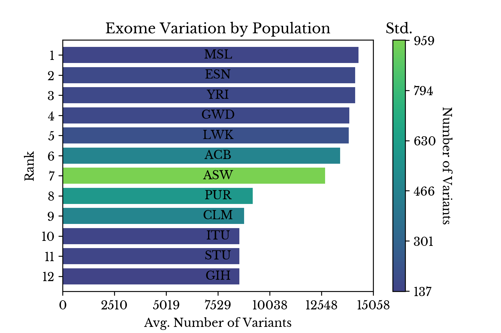
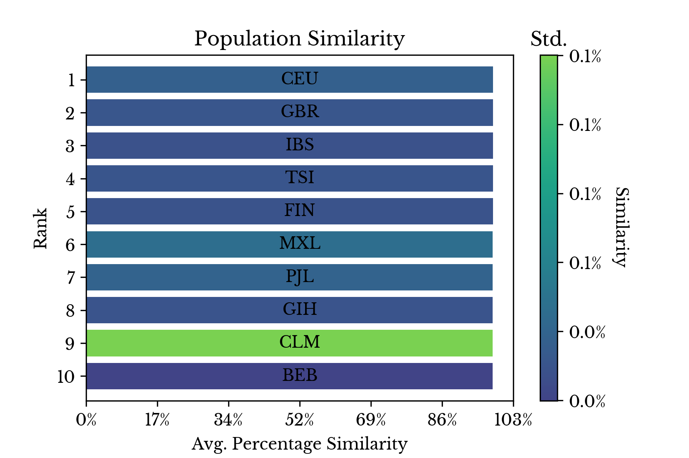
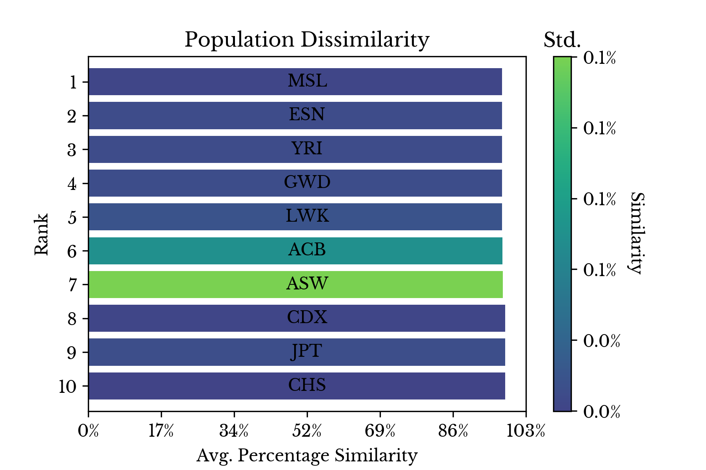

Ancestry Determination via Genetic Variant Analysis Part 2
Mon, 18 May 2020
Bioinformatics, Data Science, Data Visualization
In this post, the techniques outlined in an earlier blog post are employed to predict the ancestry of the author. Two approaches are considered: an approach using a classification model and one using similarity functions. Finally, scatter plots depicting low dimensional projections of the data are shown, plotting the genome of the author alongside samples from the IGSR dataset.Setup
An approach is employed that is similar to the one presented in a previous blog post, with several notable differences. This time only variants in the human exome are considered. The human exome is the roughly 1.5% of the human genome that is known to code for proteins. Focusing on the exome dramatically reduces memory usage, file size, and computation time, while still achieving decent results. Further, the sex chromosomes are discarded to eliminate any noise induced by ploidy differences between the sexes.An encoded sparse matrix is constructed where each row is a sample genome and every column is a specific variant allele. Each cell in the matrix counts the number of copies each sample possess of the given allele. This time an additional rows is added to the matrix corresponding to the genome of the author, sequenced by Dante Labs. From this point on, this sample is simply referred to as "the target genome" or "the target" for convenience.
As a sanity check, a histogram of the number of unique variants per sample is created. By comparing the number of unique variants in the target genome to the other samples, gross discrepancies in the vector may be identified. The value for the target genome is found to be within the range of the other samples. Specifically, it is similar to other Caucasian samples, if a little on the low end.
|  |  |
{kind=link}
{kind=link}
Figure 1: Number of Sampled Variants Present
Figure 1 contains two histograms. The first shows the distribution of the number of sampled variants present among all samples. The second shows the distribution only among samples from Great Britain and the USA. In both plots, the dashed line denotes the number of sampled variants present in the target genome.
The somewhat low number of variants in the target genome compared to similar populations may be due to differences in the pipelines used in the 1000 genomes project and at Dante Labs. Alternatively, it might also be due to the somewhat small sample size; it is possible no subjects in the IGSR dataset closely match the ancestry of the target genome.
Similarity Analysis
Next, similarity functions are designed to directly compare samples. Given two vectors, the first similarity function counts the number of alleles shared by the two corresponding individuals. For each variant, the number of alleles in common between the two samples is counted and this number is divided by the total number of alleles. Another similar function is constructed which counts matching alleles like the previous but excludes shared reference alleles.|  |  |
{kind=link}
{kind=link}
Figure 2: Most and Least Similar Samples
Figure 2 shows the individual samples most similar to the target genome using the above two similarity functions. The x-axis shows the similarity using the function that only counts non-reference alleles. The colorbar shows the similarity using all alleles. The relatively small range on the colorbar axis highlights the fact that humans are all relatively similar genetically. The spectrum of human variation stems from variation in a relatively small fraction of the overall DNA.
Considering only shared non-reference alleles, the most genetically similar individual to the target is a Spanish woman of Iberian ancestry. Again, sex chromosomes are excluded so this result is only strange for the reason that the author is not known to have any Iberian ancestors. However, if reference alleles are also counted, the most genetically similar individual is an American male from Utah: subject NA12814.
The ten that are least similar to the target are all of African origin. Indeed, samples of African origin have far more variants with respect to the reference genome than samples from other continents. African samples make up most of the second mode, centered around 13,000, visible in the histogram in Figure 1.
|  |  |
{kind=link}
Figure 4: Number of Variants by Population
Figure 4 explores this further by ranking each population by the average number of variants its members possess with respect to the reference. This disparity for samples with African origin is likely intrinsic to the way human reference genome 37 is defined.
|  |  |
{kind=link}
{kind=link}
Figure 5: Least and Most Similar Populations
Finally, the individual similarities for each sample are aggregated by their respective populations and the results are shown in two bar charts. The first chart in Figure 5 shows that the two most genetically similar groups overall are GBR and CEU. These groups respectively correspond to Britons and residents of the USA with northern and western European ancestry. The least similar populations are all African populations with Asian populations coming next.
Classification
Next, a random forest classifier is fit on a dense projection of the encoded allele matrix. The model is trained on all samples except mine. Once trained, the model is used to estimate the probability the target sample belongs to each of the classes.{kind=link}
Figure 6: Estimated Probabilities
Figure 6 shows the estimated probabilities for the target sample produced by the random forest in a bar chart. The class with the maximum probability is CEU, corroborating the results from the similarity functions. IBS, corresponding to Iberian populations in Spain, is the second most likely class according to the model.
{kind=link}
Figure 7: Projection of Genomes
Finally, a low dimensional projection of the model predictions is computed and displayed in a scatter chart. Like last time, each point in Figure 7 corresponds to one of the genomes from the IGSR dataset. Now, the target genome is plotted along with the other samples and is denoted by the large black dot annotated with three question marks. As anticipated, it resides in the dense cluster of samples with western and northern European ancestries. The definitions for each of the class annotations is available near the bottom of the previous post.